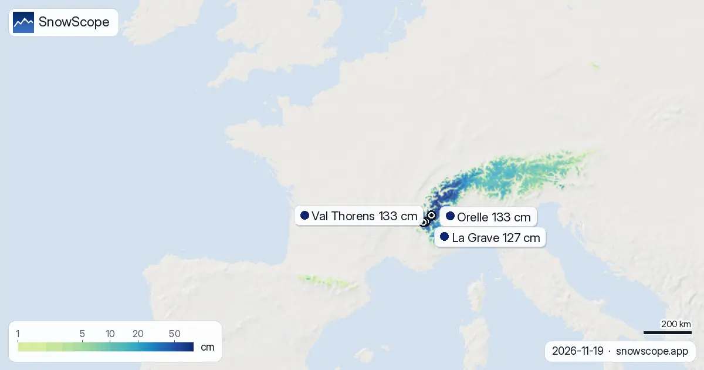

Les Alpes françaises ont gagné 5 830 km² de neige en sept jours
Val Thorens et Orelle disposent désormais de 133 cm de neige à leurs points culminants, plus de trois fois la profondeur habituelle pour la mi-novembre. Cette progression suit une semaine spectaculaire durant laquelle la couverture neigeuse totale de la France a presque doublé, passant de 6 040 km² il y a sept jours à 11 870 km² aujourd'hui.
Consultez les prévisions neige en temps réel pour Orelle sur l'application SnowScopeHauteurs de neige, alertes poudreuse et carte 3D, gratuitement.Une semaine, 5 830 km² de blanc nouveau
Les données satellitaires racontent une histoire limpide. Le 12 novembre, la neige couvrait 6 040 km² du territoire français. Aujourd'hui, elle en couvre 11 870 km². Ce gain de 5 830 km² en sept jours n'est pas typique pour novembre, et il explique pourquoi les Alpes françaises deviennent soudainement si intéressantes pour les skieurs en début de saison.
Qu'est-ce qui a provoqué ce revirement ? Une succession de systèmes neigeux qui ont favorisé les hauts sommets. Le massif du Mont Blanc a reçu 240 cm de neige fraîche en seulement 72 heures. Les Alpes françaises septentrionales ont accumulé 130 cm sur la même période, et même les chaînes méridionales se sont enneigées de 105 cm. Ce ne sont pas des estimations de modèle pour une région ; ce sont les augmentations réelles de profondeur que notre modèle neigeux a mesurées sur des zones définies.
| Jour | Surface blanche | Neige fraîche max. sur 3 jours | Station la plus enneigée |
|---|---|---|---|
| lundi 16 novembre | 9 450 km² | 29 cm | Les Arcs |
| mardi 17 novembre | 8 670 km² | 45 cm | La Grave |
| mercredi 18 novembre | 8 560 km² | 54 cm | Orelle |
| jeudi 19 novembre | 11 870 km² | 71 cm | Orelle |

Le leadership concentré à l'altitude
Orelle domine la France avec 133 cm mesurés à sa station supérieure, ayant accumulé 123 cm en trois jours. Val Thorens égale ce chiffre. La Grave en détient 127 cm après avoir absorbé 116 cm en 72 heures. Ce sont les exceptions, et elles siègent en haute altitude : Orelle et Val Thorens atteignent 3 221 m, La Grave frôle 3 543 m.
Les stations situées plus bas racontent une autre histoire. Alpe d'Huez Grand Domaine en a 90 cm à 3 306 m, tandis que Les Deux Alpes n'en détient que 102 cm à 3 511 m, malgré une altitude plus élevée. Le motif est clair : la neige la plus abondante est tombée sur les plus hauts sommets, et elle s'est concentrée dans les massifs septentrionaux et centraux.

La limite des neiges continue de baisser
Notre modèle situe la limite des neiges actuelle à 1 800 m à travers la France. En dessous, la couverture est clairsemée. Entre 1 500 et 2 000 m, seulement 46 pour cent du terrain est blanc, avec une profondeur moyenne de seulement 4 cm. Aux altitudes intermédiaires (2 000 à 2 500 m), la couverture grimpe à 76 pour cent et les profondeurs moyennes atteignent 13 cm.
Au-dessus de 2 500 m, le tableau se transforme. Ici, 96 pour cent du terrain est enneigé et les profondeurs moyennes avoisinent 41 cm. C'est là où le ski fonctionnera en premier lieu. La limite des neiges peut baisser davantage à mesure que les températures réagissent au prochain système.
Ce qui est tombé en 72 heures
Total des 24 heures hier : jusqu'à 39 cm dans les zones les plus hautes. Sur trois jours, le maximum a atteint 71 cm. Notre modèle trace ces accumulations sur des cellules cartographiées, donc les chiffres représentent des moyennes de zone, pas des mesures ponctuelles à une seule station météorologique. Pour la planification du ski, l'enjeu pratique est le suivant : les augmentations de profondeur ont été suffisamment importantes pour modifier quelles altitudes disposent désormais d'une neige skiable.
Encore de la neige en approche
La prévision pour les trois prochains jours affiche 86 cm possibles dans les meilleures zones ; sur sept jours, 125 cm. Le 22 novembre semble être la journée la plus chargée, avec jusqu'à 49 cm dans les hautes régions. Cela signifie que la limite des neiges continuera à baisser, et même les stations d'altitude intermédiaire pourraient devenir skiables.
La deuxième semaine (27 novembre au 3 décembre) reste active, quoique à rythme ralenti : 25 cm attendus plutôt que 125 cm. Début décembre, si ces prévisions se concrétisent, la France sera passée de conditions marginales en début de saison à quelque chose de plus robuste.
Contexte : bien au-dessus de la normale
Les 133 cm d'Orelle représentent 23 pour cent de plus que sa profondeur habituelle de mi-novembre, soit 108 cm. Val Thorens se situe à 262 pour cent de la normale pour cette date. Ces anomalies comptent car elles percent le brouillard du début de saison, quand la neige maigre et les rochers affleurants sont toujours un risque. La profondeur seule ne garantit pas un ski sûr, mais elle le rend plus probable.
Treize pour cent de la zone modélisée de la France est désormais enneigée (part blanche : 13 pour cent). C'est faible selon les standards hivernaux, mais cela marque une hausse nette par rapport à la semaine précédente. En une semaine, la fraction couverte a plus que doublé.
Conseils aux skieurs
- Visez les altitudes au-dessus de 2 500 m pour la neige la plus fiable. En dessous de 1 800 m, les aléas de terrain restent probables même après les chutes récentes.
- Orelle, Val Thorens et La Grave sont désormais les choix les plus sûrs pour la profondeur. Les Deux Alpes et Alpe d'Huez en détiennent 90 à 102 cm mais demeurent plus maigres.
- Attendez-vous à des chutes de neige importantes les 20 à 22 novembre. Planifiez vos descentes dans des zones déjà mappées et stables ; consultez le bulletin officiel d'avalanches avant tout départ hors-piste.
- Les rochers et plaques minces subsistent au-dessus de la limite des neiges. La couverture blanche n'atteint que 46 pour cent à 1 500 à 2 000 m, restez donc sur le terrain balisé dans cette bande.
- Suivez la prévision quotidiennement. Les perspectives à sept jours affichent 125 cm possibles, ce qui transformerait l'accès plus bas sur la montagne d'ici la fin de la semaine prochaine.
À propos de ces chiffres
Les hauteurs de neige des stations sont la neige la plus épaisse sur le haut du domaine, d'après le modèle de neige SnowScope (environ 1 km, calcul du 19 novembre) ; ce sont des estimations pour une zone, pas une mesure en un point. Les valeurs des stations de mesure sont mesurées à la date indiquée. Les prévisions peuvent changer. Consultez toujours le bulletin d'avalanche officiel avant le hors-piste.
Citer ce bulletin
Pour la recherche, l'enseignement ou la presse : chiffres et graphiques réutilisables librement sous CC BY 4.0 avec cette citation.
SnowScope (2026), Les Alpes françaises ont gagné 5 830 km² de neige en sept jours, https://snowscope.app/blog/fr/2026/11/france-snow-cover-gain-this-week-19-november-2026.html, consulté le 2026-11-19
SnowScope (Atlas Labs). (2026, November 19). Les Alpes françaises ont gagné 5 830 km² de neige en sept jours. SnowScope snow reports. https://snowscope.app/blog/fr/2026/11/france-snow-cover-gain-this-week-19-november-2026.html
BibTeX
@misc{snowscope2026francesnowcovergainthisw,
author = {{SnowScope (Atlas Labs)}},
title = {Les Alpes françaises ont gagné 5 830 km² de neige en sept jours},
year = {2026},
month = nov,
howpublished = {\url{https://snowscope.app/blog/fr/2026/11/france-snow-cover-gain-this-week-19-november-2026.html}},
note = {Published 2026-11-19 12:19 UTC; accessed 2026-11-19}
}· CC BY 4.0 · Méthodes, données et outils →
Orelle : neige et température selon l'altitude, cet hiver vs l'hiver dernier (outils) →
Suivre Orelle
Gratuit : un message quand la neige arrive, et la météo chaque matin.
Autres bulletins neige

Le manteau neigeux de La Grave a gagné 17 cm en une semaine pour atteindre 43 cm le 14 novembre, avec une prévision de 61 cm supplémentaires dans les 72 heures à venir alors qu'un système se déplace sur les Alpes.

Les 2 Alpes culmine à 3 511 m pour de la neige abondante en décembre 2026, avec un forfait adulte 6 jours à 266,50 EUR.

Orelle a atteint 31 cm le 16 novembre, en hausse de 17 cm en une semaine. Les Alpes devraient recevoir jusqu'à 103 cm de neige supplémentaire d'ici le 19 novembre.